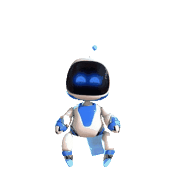

Изкуственият Интелект - Artificial intelligence (AI)
Осмели се да живееш в бъдещето!

Начало
Машинно обучение (ML)
ИИ- Приложения в МСП
Подкаст
Изкуствен интелект: възможности и заплахи
Разликата между човешкия и изкуствения интелект